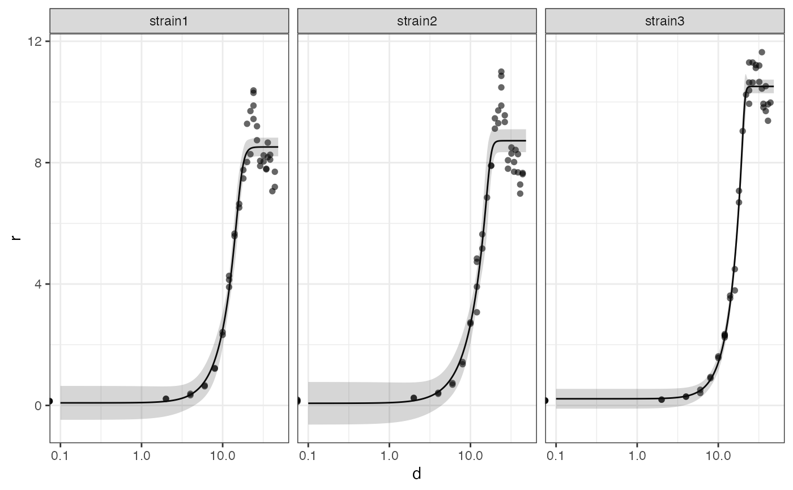

Tidy modelling of dose-response relationships with the drc package.
tidydrc_model(data, dose, response, model, ...)
| data | dataframe with two or more variables, organized in a tidy way |
|---|---|
| dose | Numeric, the dose variable (could be time, amount of some compound, ...) |
| response | Numeric, the response variable (for example population size, optical density, ...) |
| model | The model function from |
| ... | Variables to group by |
A tibble with list-columns containing the data, the predictions and the coefficients of the model.
This function is a tidy wrapper for the dose-response modeling functions of
the drc package. By default, the four-parameter log-logistic function
LL.4() is used. All other functions, implemented in drc, can be
used when provided as the model parameter to this function. The
function returns a dataframe with list-columns (the data, predictions and
coefficients). It is thus easy to implement in tidy workflows.
Angel Angelov
### Logistic regression of bacterial growth data ### # using the built-in dataset growthdata3 library(tidyverse)#>#> #> #> #>#> #> #> #>data(growthdata3) gdata <- growthdata3 %>% gather(strain, value, strain1:strain3) llm.1 <- gdata %>% tidydrc_model(dose = hours, response = value, model = LL.5(), strain) # get the coefficients of the model(s) llm.1 %>% unnest(coefs)#> # A tibble: 15 × 7 #> # Groups: strain [3] #> strain data drmod resid pred parameter value #> <chr> <list> <list> <list> <list> <chr> <dbl> #> 1 strain1 <tibble [48 × 4]> <drc> <df [46 × 2]> <df [1,44… b:(Interc… -12.8 #> 2 strain1 <tibble [48 × 4]> <drc> <df [46 × 2]> <df [1,44… c:(Interc… 0.0840 #> 3 strain1 <tibble [48 × 4]> <drc> <df [46 × 2]> <df [1,44… d:(Interc… 8.52 #> 4 strain1 <tibble [48 × 4]> <drc> <df [46 × 2]> <df [1,44… e:(Interc… 16.9 #> 5 strain1 <tibble [48 × 4]> <drc> <df [46 × 2]> <df [1,44… f:(Interc… 0.186 #> 6 strain2 <tibble [48 × 4]> <drc> <df [46 × 2]> <df [1,44… b:(Interc… -20.0 #> 7 strain2 <tibble [48 × 4]> <drc> <df [46 × 2]> <df [1,44… c:(Interc… 0.0706 #> 8 strain2 <tibble [48 × 4]> <drc> <df [46 × 2]> <df [1,44… d:(Interc… 8.72 #> 9 strain2 <tibble [48 × 4]> <drc> <df [46 × 2]> <df [1,44… e:(Interc… 17.6 #> 10 strain2 <tibble [48 × 4]> <drc> <df [46 × 2]> <df [1,44… f:(Interc… 0.106 #> 11 strain3 <tibble [48 × 4]> <drc> <df [45 × 2]> <df [1,44… b:(Interc… -35.8 #> 12 strain3 <tibble [48 × 4]> <drc> <df [45 × 2]> <df [1,44… c:(Interc… 0.219 #> 13 strain3 <tibble [48 × 4]> <drc> <df [45 × 2]> <df [1,44… d:(Interc… 10.5 #> 14 strain3 <tibble [48 × 4]> <drc> <df [45 × 2]> <df [1,44… e:(Interc… 21.2 #> 15 strain3 <tibble [48 × 4]> <drc> <df [45 × 2]> <df [1,44… f:(Interc… 0.0801# make a ggplot, facetting by strain llm.1 %>% tidydrc_plot(confint = TRUE) + ggplot2::facet_grid(. ~ strain)#> Warning: Transformation introduced infinite values in continuous x-axis#> Warning: Removed 7 rows containing missing values (geom_point).### Using the S.alba dataset from drc ### llm <- tidydrc_model(S.alba, Dose, DryMatter, model = LL.4(), Herbicide) llm %>% unnest(coefs)#> # A tibble: 8 × 7 #> # Groups: Herbicide [2] #> Herbicide data drmod resid pred parameter value #> <fct> <list> <list> <list> <list> <chr> <dbl> #> 1 Glyphosate <tibble [32 × 4]> <drc> <df [32 × 2]> <df [680 … b:(Interc… 2.72 #> 2 Glyphosate <tibble [32 × 4]> <drc> <df [32 × 2]> <df [680 … c:(Interc… 0.892 #> 3 Glyphosate <tibble [32 × 4]> <drc> <df [32 × 2]> <df [680 … d:(Interc… 3.88 #> 4 Glyphosate <tibble [32 × 4]> <drc> <df [32 × 2]> <df [680 … e:(Interc… 62.0 #> 5 Bentazone <tibble [36 × 4]> <drc> <df [36 × 2]> <df [680 … b:(Interc… 5.13 #> 6 Bentazone <tibble [36 × 4]> <drc> <df [36 × 2]> <df [680 … c:(Interc… 0.682 #> 7 Bentazone <tibble [36 × 4]> <drc> <df [36 × 2]> <df [680 … d:(Interc… 3.81 #> 8 Bentazone <tibble [36 × 4]> <drc> <df [36 × 2]> <df [680 … e:(Interc… 29.3# estimate the effective doses for several response levels, as a tibble names(llm$drmod) <- as.character(llm$Herbicide) map(llm$drmod, ED, c(10, 50, 90)) %>% map_df(as_tibble, rownames = "level", .id = "Herbicide")#> #> Estimated effective doses #> #> Estimate Std. Error #> e:1:10 27.6316 6.6495 #> e:1:50 62.0481 7.1254 #> e:1:90 139.3317 40.3828 #> #> Estimated effective doses #> #> Estimate Std. Error #> e:1:10 19.0619 2.3268 #> e:1:50 29.2648 2.0655 #> e:1:90 44.9289 4.5500#> # A tibble: 6 × 4 #> Herbicide level Estimate `Std. Error` #> <chr> <chr> <dbl> <dbl> #> 1 Glyphosate e:1:10 27.6 6.65 #> 2 Glyphosate e:1:50 62.0 7.13 #> 3 Glyphosate e:1:90 139. 40.4 #> 4 Bentazone e:1:10 19.1 2.33 #> 5 Bentazone e:1:50 29.3 2.07 #> 6 Bentazone e:1:90 44.9 4.55### Fit a Michaelis-Menten kinetics model ### # for the built-in Puromycin dataset and get the Km values with std. error mm <- tidydrc_model(Puromycin, conc, rate, model = MM.3(), state) names(mm$drmod) <- as.character(mm$state) map(mm$drmod, ED, 50) %>% map_df(as_tibble, .id = "sample")#> #> Estimated effective doses #> #> Estimate Std. Error #> e:1:50 0.104667 0.026575 #> #> Estimated effective doses #> #> Estimate Std. Error #> e:1:50 0.108769 0.030817#> # A tibble: 2 × 3 #> sample Estimate `Std. Error` #> <chr> <dbl> <dbl> #> 1 treated 0.105 0.0266 #> 2 untreated 0.109 0.0308